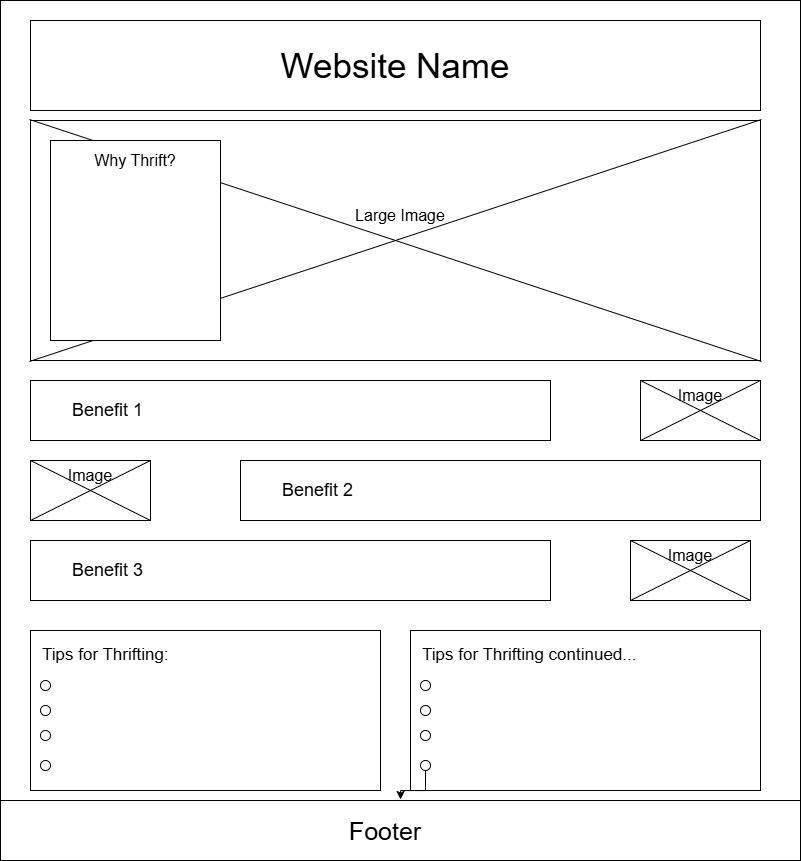
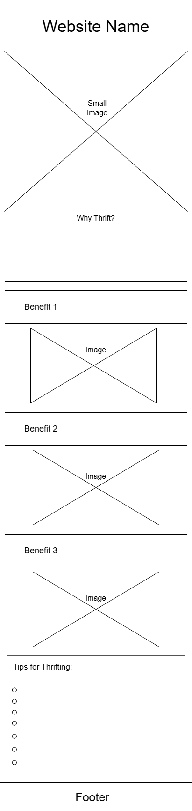

Site Purpose:
This site provides a 'how to' on thrifting for beginners or people who are looking for places to thrift in their area. It also provides a page where users can share their thrift finds.
Scenarios:
What are some tips to thrift effectively? Where can I go thrifting in my area? What is the best type of place to thrift at with my budget?Color Schema:
Primary color: #25170F - used for main backgrounds. Secondary color: #6F4E3F - used for secondary backgrounds (eg section backgrounds) Accent 1 color: #fff - used for heading colors Accent 2 color #000 - used for contentTypography:
Headings font: Forum Content font: InconsolataWireframes:

